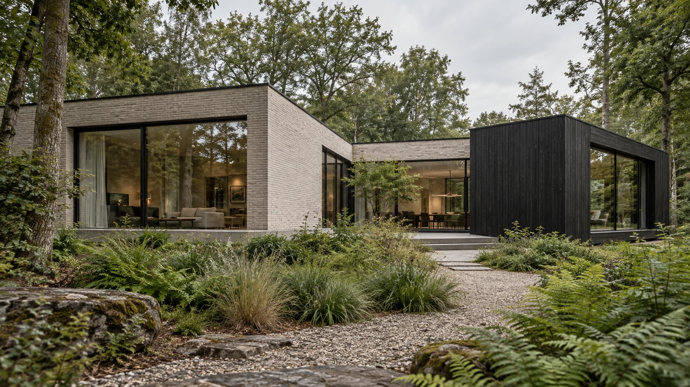
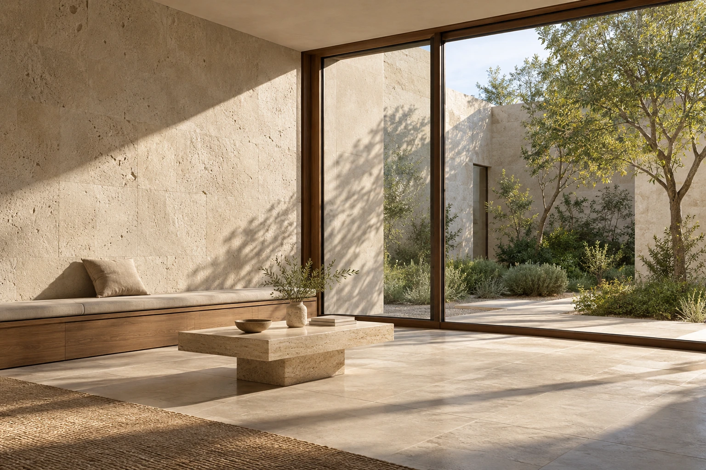
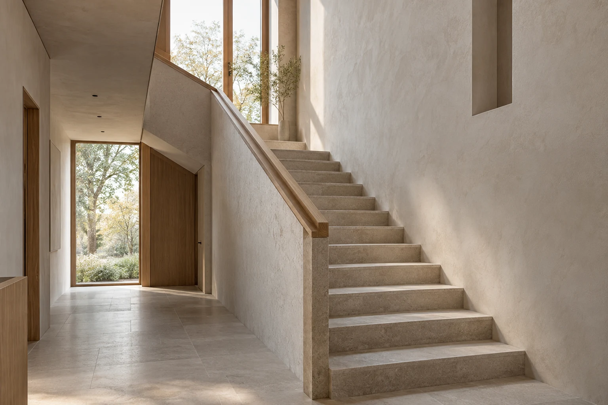
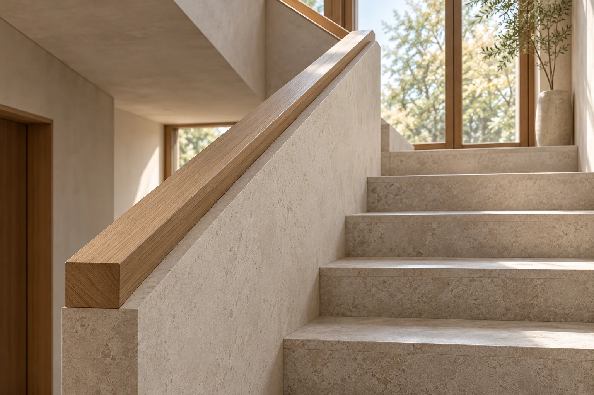

Bureau d’architecture
Mathias Gouvart Architecte
Constructions neuves
Rénovations & transformations
Mons et alentours · rayon de 50 km

Constructions neuves
Maison Horizon
Étude d’intention — images d’ambianceLes projets
Études et intentions

Rénovations / Transformations
Maison Lumière
Étude d’intention — images d’ambiance
Rénovations / Transformations
Appartement Matière
Étude d’intention — images d’ambianceLes études d’intention présentées sont fictives et illustrées par des images d’ambiance.
Votre projet
Construire ou transformer

Image d’ambianceMathias Gouvart Architecte
Le bureau
À Mons et dans un rayon de 50 km, Mathias Gouvart vous accompagne de la conception jusqu’à la réalisation.
Construction neuve, transformation, demande de permis ou régularisation : le premier échange permet de préciser la mission adaptée à votre projet.